Se encuentra en la región de la torre de Lanayru, y puedes entrar en él desde que llegas a la ciudad de zora. Está muy cerca de la sala del rey. Una vez dentro tendrás que enfrentarte al reto del impulso decisivo.
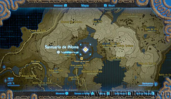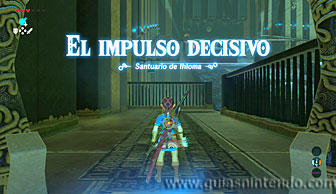
Lo primero que verás es a unas grandes bolas de piedra cayendo cuesta abajo. Debes subir esa gran rampa, con cuidado de no ser aplastado por ellas. En la parte superior hay una cascada y verás una esfera en un pedestal. Usa el módulo de hielo (creando un bloque en la pared) para hacer caer la esfera de ese pedestal.
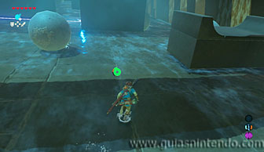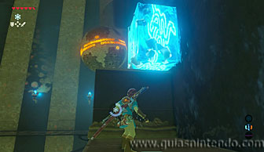
Después crea otro bloque sobre la esfera para hacer que se eleve y pase por encima de la plataforma que tiene la parte superior cóncava. Antes de ello crea un bloque delante del rayo láser. Así cuando la esfera llegue a él, se parará y caerá hacia la izquierda.
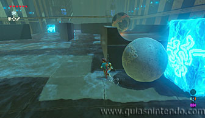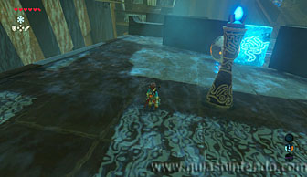
Vuelve a crear otro bloque bajo la esfera para elevarla de nuevo a la parte cóncava de la plataforma donde ha ido a parar. Antes debes haber creado otro bloque para frenarla. Por último, crea otro bloque más para elevarla y que llegue hasta su objetivo.
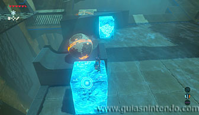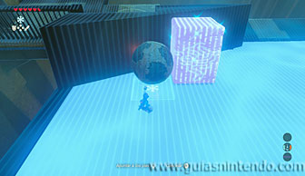
Antes de salir, puedes subir a la parte superior y recorrer los pasillo que van por encima para localizar un cofre que contiene la Lanza zora.
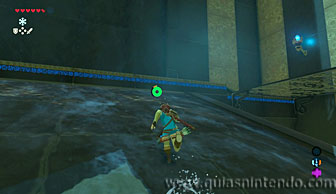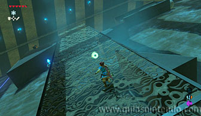
Cuando llegues al altar del santuario podrás examinarlo para obtener un símbolo de valía.
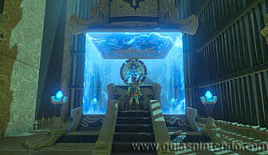